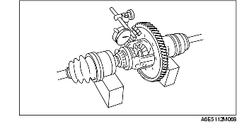

FÖRKONTROLL AV DIFFERENTIAL
B3E051527100101
Kontroll av kuggspel
1. Mät kuggspelet enligt följande.
-
(1) Montera vänster och höger drivaxel i differentialen.
-
(2) Stöd drivaxeln på V-blocken som visas på bilden.
-
(3) Mät kuggspelen i båda pinjongdreven.

-
• Om de inte är enligt specifikationen, justera genom att montera tryckbrickor mellan huset och kronhjulen.
-
Kuggspel
-
0-0,1 mm {0-0,004 tum}
Försiktigt
-
• Använd tryckbrickor med samma tjocklek på båda sidor.
Tjocklek på tryckbricka
mm {tum}
|
2,0 {0,079}
|
2,1 {0,083}
|
2,2 {0,087}
|
-
• Om specifikationen inte uppfylls även om en 2,2 mm {0,087 tum} tjock tryckbricka används, byt differentialenheten.